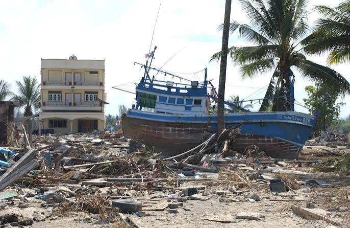

What causes a hazard, and what makes it dangerous where you live? Explore five examples from Myanmar and see how households and communities can reduce the harm.
An earthquake happens when energy released inside the Earth travels through rock as waves and shakes the ground.
Three causes to explore
Select a cause to read how it works.
01
Movement along faults
A fault is a break in the Earth’s crust where rocks on either side can move. Friction can hold the rocks in place while the surrounding crust keeps moving, so stress builds. When the fault slips, it releases energy as seismic waves. Those waves spread through the ground. The 2025 central Myanmar earthquake came from movement along the Sagaing Fault.
02
Movement beneath volcanoes
Magma is molten rock below the surface. As it moves, it pushes on the rock around it. Rock can crack or slip in response, producing small earthquakes. Moving gases and hot fluids can also change pressure in nearby cracks. Scientists look for changes in earthquake patterns alongside other observations when monitoring a volcano.
03
Changes in underground pressure
Some human activities change the pressure of fluid deep underground. If that pressure reaches a fault, it can reduce how tightly the two sides press together, making it easier for them to move. A fault already under stress may then slip. The chance of this happening depends on local geology, whether fluid pressure can reach the fault, and how much stress is already there.
Why the damage differs between places
Damage depends on how hard the ground shakes, the type of soil, and how buildings are built. Loose, water-filled soil can lose strength during shaking. This is called liquefaction, and it can tilt buildings or damage buried pipes. Shaking can also trigger landslides.
Mandalay and Sagaing · 28 March 2025
The central Myanmar earthquake
A magnitude 7.7 earthquake struck near Mandalay when the Sagaing Fault ruptured. UNICEF’s June 2025 update estimated that nearly 52,000 homes were damaged or destroyed.
Reduce earthquake risk
At home: Secure heavy furniture to suitable walls and keep heavy objects on lower shelves to reduce injuries from falling items.
In the community: Have vulnerable buildings assessed by qualified engineers. Strengthening buildings can reduce the risk of collapse.
A landslide happens when soil, rock, or debris moves downhill. The danger can extend to homes and roads on flat ground below the slope.
Three causes to explore
Select a cause to read how it works.
01
Heavy rain
Rain fills the spaces between grains of soil. As water pressure rises, the grains can press against one another less firmly and the soil becomes easier to move. If the slope is already wet from earlier rain, more rain can be enough to trigger a slide. The amount of rain that causes trouble varies with the slope, soil, and drainage.
02
Earthquake shaking
Shaking moves a slope back and forth and can loosen blocks of rock along existing cracks. On a steep or already unstable slope, a brief shake can start a slide. Loose, wet sediment can also lose strength during shaking. Homes and roads on flatter ground below the slope can still be in the path of the moving debris.
03
Excavation and drainage changes
The base of a slope helps support the material above it. Digging into that base for a road, mine, or building can reduce support or leave a steeper face. Drains that send water onto the slope can add to the problem. Where these changes make a slope unstable, later rainfall or shaking can trigger movement.
Effects on land and communities
A slide can strip away topsoil, cover farmland, block transport routes, and damage homes. Debris that reaches a river can block the channel and cause flooding upstream.
Hpakant, Kachin · 2 July 2020
The Hpakant landslide
A slope collapsed at the Wai Khar open-pit jade mine. A study published in 2021 reported that at least 172 miners died. Researchers used satellite observations and other data to study how the slope had changed.
Reduce landslide risk
At home: Get qualified advice if you notice new ground cracks or unusual water flowing from a slope. Ask where runoff should go before changing drainage near a hillside.
In the community: Have slopes assessed before construction. Suitable planting and drainage can help stabilise shallow soils where site conditions allow.
Subsidence means the ground surface sinks. A sinkhole can form when material below the surface is removed and the ground above it settles or collapses.
Three causes to explore
Select a cause to read how it works.
01
Groundwater pumping
Groundwater fills spaces between sediment grains. When pumping lowers water pressure, more of the weight above is carried by the sediment itself. Fine layers such as clay and silt can compress, lowering the land surface across a wide area. Some compaction can be permanent even if water levels recover. This is the process researchers linked to much of Yangon’s measured sinking.
02
Rock dissolving underground
Water that seeps through soil can become slightly acidic and slowly dissolve rock such as limestone. Over time, cracks and gaps can become wider. Soil may gradually settle into a gap, creating a shallow depression. If the layer above a cavity suddenly loses support, the ground can collapse and form a sinkhole.
03
Underground excavations
Mining can leave open spaces beneath the land. If a tunnel roof or support pillar fails, the rock and soil above can settle or collapse. The surface may sink slowly or drop in one place. The depth and size of the excavation and the strength of the ground above it affect what happens at the surface.
Effects on land and communities
Uneven sinking can crack walls, damage pipes, and change how water drains. A sinkhole can open suddenly and damage roads or buildings close to the collapse.
Yangon · Study published in 2018
Where the ground is sinking
Satellite measurements identified four zones in Yangon with marked differences in how fast the ground moved vertically. Researchers linked much of the sinking to groundwater pumping.
Reduce ground-collapse risk
At home: Keep people away from a new hole or visibly unstable ground and seek an assessment from a qualified geologist or engineer.
In the community: Check ground conditions before building. Where groundwater pumping causes sinking, managing water use can help slow it.
A tsunami is a series of waves caused by the sudden movement of a large amount of water. Near the coast, the waves can rush inland and create strong currents.
Three causes to explore
Select a cause to read how it works.
01
Undersea earthquakes
A large, shallow earthquake beneath or near the sea can suddenly lift or lower part of the seafloor. This moves the water above it and sends waves outward. The amount and direction of seafloor movement matter. As the waves enter shallower water near shore, they slow down and can grow taller or sweep inland as a fast rise in water.
02
Landslides into or under water
A fast-moving mass of rock or soil can push water aside whether it falls from land into the sea or slides along the seabed. The amount of material and how quickly it moves help determine the size of the waves. These waves can reach nearby shores very quickly and usually lose energy faster than waves from a large undersea earthquake.
03
Volcanic activity
An explosion near the water surface or the collapse of the side of a coastal volcano can move a large volume of water suddenly. That movement can generate tsunami waves. The strength and reach of the waves depend on how much water moves and how quickly. Volcanic events are a much less common source of tsunamis than earthquakes.
Effects on land and communities
Fast-moving water can damage buildings, fishing boats, roads, and bridges. Seawater can contaminate wells and leave salt in farmland. Low-lying coastal communities are especially exposed.
Ayeyarwady Delta and Tanintharyi · 26 December 2004
The Indian Ocean tsunami
A large undersea earthquake off Sumatra moved the seafloor. A field survey at 22 sites on the Myanmar coast measured tsunami heights of 0.4–2.9 metres at the places surveyed.

Reduce tsunami risk
At home: Know the fastest safe route inland or to higher ground. After strong or long shaking near the coast, move once the shaking stops. A nearby tsunami can arrive before an official warning.
In the community: Mark evacuation routes and practise using them, including with people who may need help getting to safety.
Flooding happens when water covers areas that are normally dry. It can build slowly as a river rises or arrive quickly after intense rain.
Three causes to explore
Select a cause to read how it works.
01
Heavy rain and fast runoff
If rain falls faster than soil can absorb it and drains can carry it away, water collects on the surface and runs downhill. Soil that is already soaked absorbs less water. Roads and roofs send water quickly towards low spots. Floodwater that rises very quickly is called a flash flood. Heavy rain is a common trigger.
02
Rivers overflowing
A river collects runoff from the land that drains into it. After prolonged rain across that area, more water can enter the river than its channel can carry. The river then spreads across its floodplain, the low land beside it. Water can reach communities far downstream even if little rain fell there.
03
Storm surge
Strong winds from a coastal storm can pile seawater up against the shore and raise the water above its usual level. This rise is called a storm surge. Flooding can be worse if the surge arrives at high tide or pushes water inland through river mouths and estuaries. Heavy rain at the same time can add to the flooding.
Effects on land and communities
Floodwater can wash away soil, destroy crops, contaminate drinking water, and cut off roads. Repeated flooding can displace families and interrupt work and access to healthcare.
Myanmar · September 2024
Floods after heavy monsoon rain
Heavy monsoon rain and the remnants of Typhoon Yagi flooded areas including Bago, Kayin, and Mandalay. As of 26 September 2024, the UN estimated that about 1 million people across 70 townships were affected.
Reduce flood damage
At home: Keep important documents and portable electrical items above likely flood levels. Ask a qualified electrician about moving fixed electrical equipment higher.
In the community: Protect natural areas that hold floodwater and consider flood risk when choosing where to build new homes, clinics, and roads.